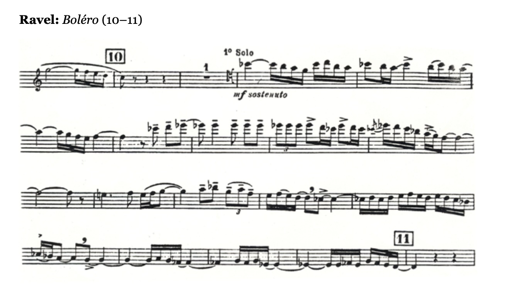
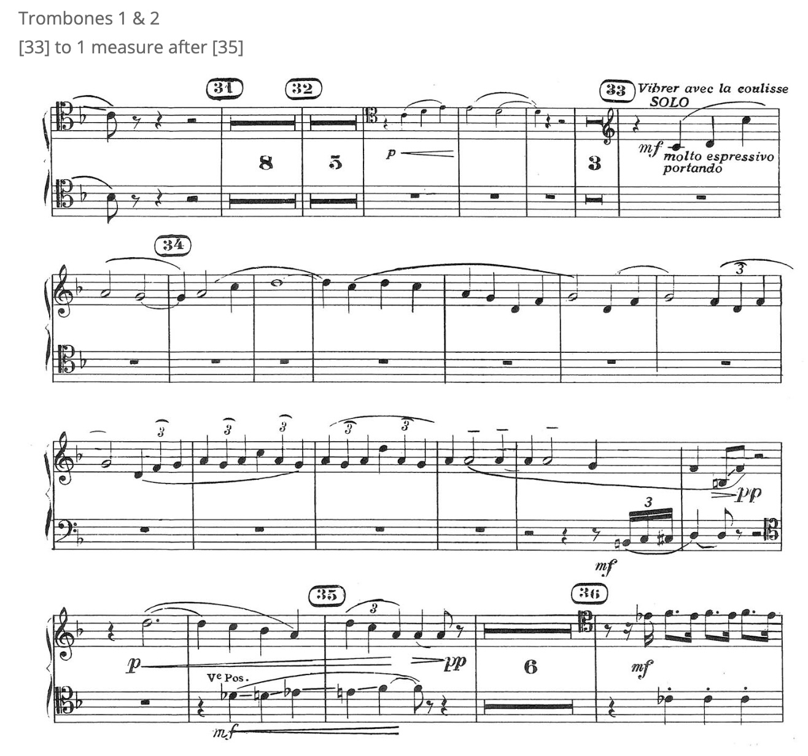

Ravel - Bolero
Advice
This is one of the most famous orchestral trombone solos of all time. It is also one of the most difficult because of the range required to play it. Listen to a bunch of recordings for this to learn the style and how it goes. However, I think this excerpt requries a lot of practice on not just the excerpt, but your basic high range fundamentals. Try your standard exercises that you should be doing daily, like high lip slurs and glisses and pay extra attention to your sound quality.
Resources
Excerpt Recording - Ian Bousfield
Breaking Down the Excerpt - Joe Alessi
Ravel - L'Enfant et les Sortilèges
Advice
This is another famous orchestral trombone solo. Make sure to listen to recordings to know how this should sound dynamically and stylistically. This one is also extremely challenging because of the range- it's even in treble clef. Definitely record yourself and listen back many times to see where to improve.